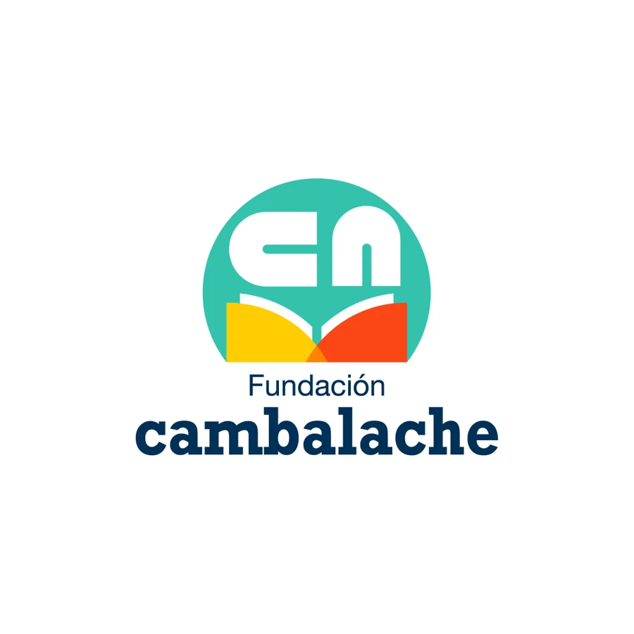

Fundación Cambalache

Punto de Cultura Comunitaria
Codegua, Graneros, Mostazal, Rancagua, Rengo
La Fundación Cambalache, es una organización sin fines de lucro comprometida con la promoción del libro y la lectura en contextos educativos y comunitarios. A través de diversos proyectos, busca facilitar el acceso a bienes culturales, tanto materiales como inmateriales, en distintas comunidades de la región de O’Higgins.
Durante todo el año, nuestra Biblioteca Comunitaria Cambalache abre sus puertas a la comunidad para fomentar el amor por el libro y la lectura. Inaugurada hace 10 años, esta biblioteca no sólo pone a disposición de los visitantes una amplia y fascinante colección de libros y una ludoteca de manera gratuita, sino que también organiza actividades de mediación lectora dirigidas a infancias y familias. Es un espacio de encuentro, aprendizaje y crecimiento.
Además, nuestros festivales itinerantes recorren las comunidades educativas de la región, ofreciendo una variedad de actividades que promueven la lectura, el acceso a la cultura y la creatividad en la primera infancia, así como entre niños, niñas y adolescentes.
Proyectos
Noticias
Servicios
Préstamo gratuito y consulta de títulos y ludoteca. Contamos con una colección fascinante de libros para todas las edades, plan lector, sector infantil, juvenil y colección general.